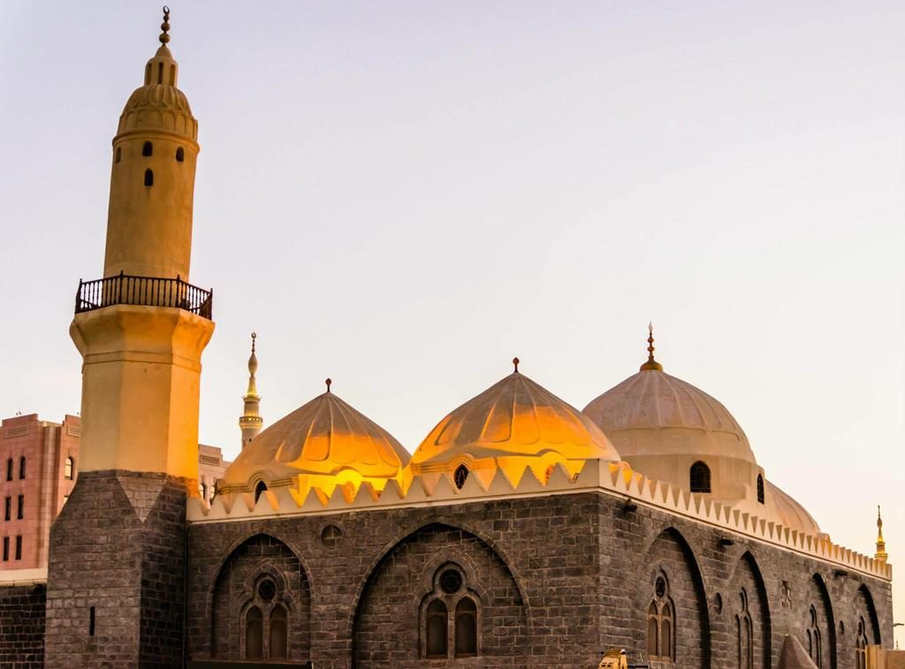
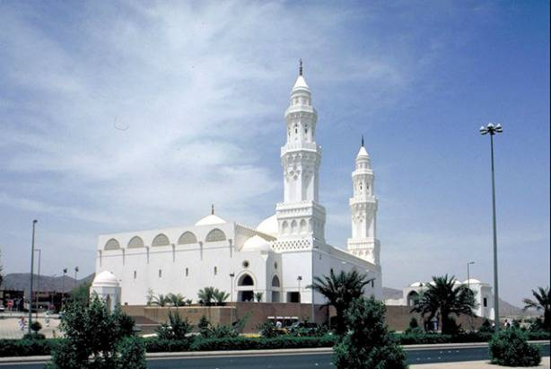
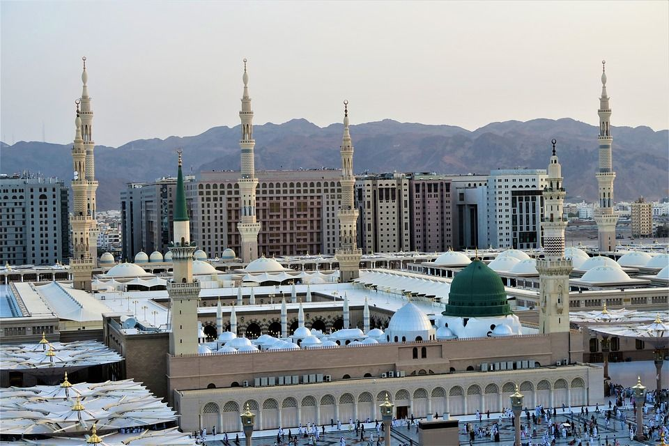
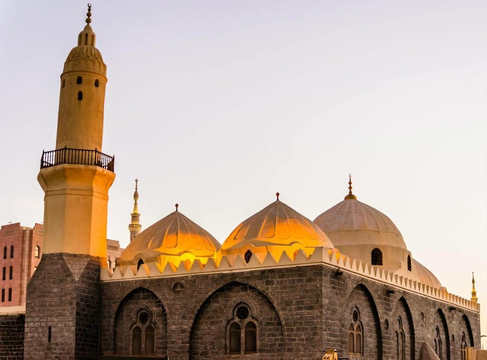
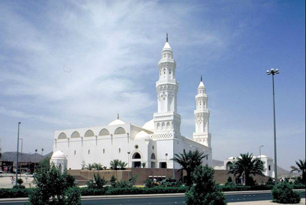
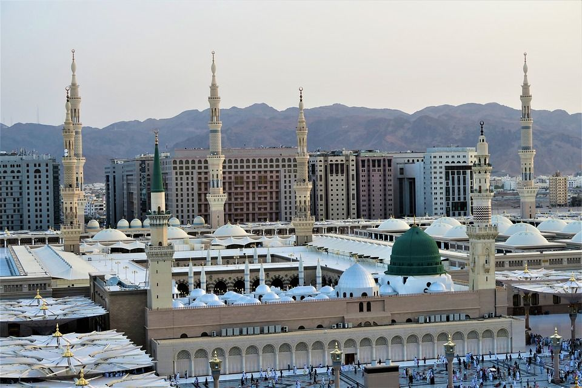

MEDINE
Visiter ou simplement évoquer le nom de l’Arabie Saoudite sans parler de Médine serait quelque peu faire insulte à la très sainte ville. Qu’Allah nous en préserve ! L’endroit est unique. Plus qu’une destination, c’est la ville à ne surtout pas manquer lorsque l’Arabie Saoudite vous ouvre grandement ses bras. À plus forte raison quand on est musulman, car il s’agit en effet de la deuxième ville Sainte de l’Islam après la Mecque. Voilà qui semble justifier son regain d’intérêt auprès de touristes et pèlerins. Si vous voulez recevoir d’abondantes bénédictions, faites un tour du côté de Médine. Votre illumination sera totale ! Médine était la destination de Muhammad (saw) pour sa Hijrah (migration) de la Mecque et devint la capitale d'un empire musulman en expansion rapide, sous la direction de Muhammad (saw). Il a servi de base de pouvoir à l’islam au cours de son premier siècle, où la première communauté musulmane s’est développée. Medina abrite les trois plus anciennes mosquées, à savoir la mosquée Quba, al-Masjid an-Nabawi, et la masjid al-Qiblatayn («la mosquée des deux Qiblas») L'importance de Medina en tant que site religieux provient de la présence d'al-Masjid an-Nabawi. Le calife omeyyade Al-Walid I a agrandi la mosquée. Le mont Uhud est une montagne au nord de Médine, site de la deuxième bataille entre les forces musulmanes et mecquoises. La première mosquée construite à l'époque de Mahomet se trouve également à Medina, connue sous le nom de mosquée Quba. Il a été détruit par la foudre, probablement vers 850 de notre ère, et les tombes ont presque été oubliées. En 892, le lieu a été nettoyé, les tombes ont été localisées et une belle mosquée a été détruite, qui a été détruite par un incendie en 1257 de notre ère et presque immédiatement reconstruite. Il a été restauré par Qaitbay, le dirigeant égyptien, en 1487. MEDINE EST CARACTERISEE PAR DEUX CHOSES ESSENTIELLES A MON AVIS ET C’EST POURQUOI NOUS REVONS DE LA VISITER: LA MOSQUEE DU PROPHETE MOHAMED QUE LE SALUT ET LA PRIERE DE DIEU SOIENT SUR LUI ET LA BONTE DE DE SA POPULATION GENEREUSE.”
 
